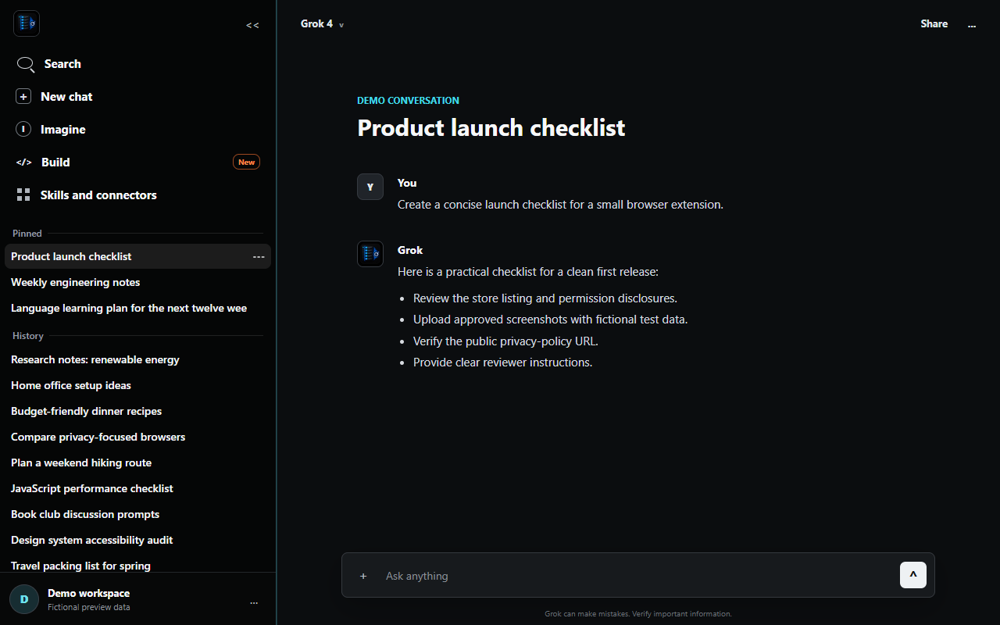
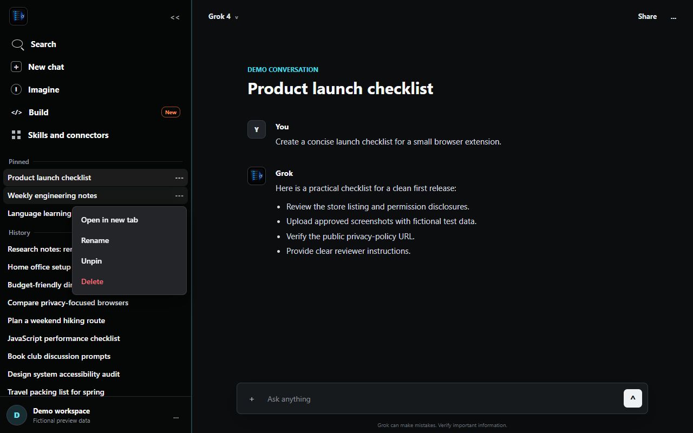
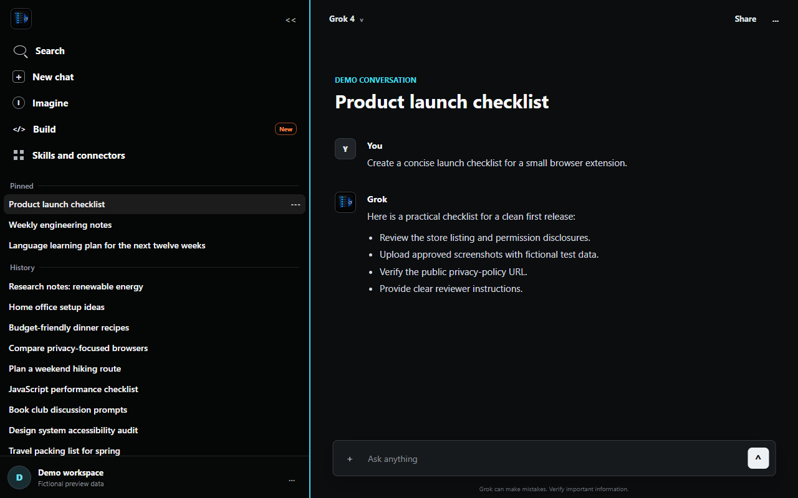

Version 1.0.2 · Chromium and Firefox
All Chats Sidebar for Grok
Every available conversation in one continuous sidebar, with live updates, fast navigation, native chat actions, and a width you control.
Complete history
One list instead of a separate history menu
The extension loads all available Grok conversations into the native left sidebar. Pinned chats stay grouped at the top, while the rest of the history shares the same scrollable area.
Live and seamless
Changes appear without a reload
New chats, generated titles, pin state, ordering, renames, and deletions are reconciled as they happen. Updates also propagate across open Grok tabs and after an inactive tab resumes.
- SPA navigation opens the canonical chat route without refreshing the page.
- The list keeps its scroll position while chats change or are selected.
- Pointer and keyboard interactions preload the selected conversation.

Fits your workspace
Resize the sidebar from its full right edge
Drag anywhere along the sidebar's right boundary to make long titles fully visible. The selected width is stored
locally, and Grok's default width can be restored with a double-click or the Home key while the
resize handle is focused.
The interface is available in English, Spanish, German, Brazilian Portuguese, Russian, Ukrainian, and French.

Browser support
One source, two reviewed packages
Chromium
Built for current desktop Chromium-based browsers. Language preferences may synchronize through the browser profile; sidebar width remains local.
Firefox
Built for Firefox Desktop 142 or newer with a stable Mozilla Add-ons ID. Language and width preferences remain local. Firefox for Android is not currently supported.
No hidden infrastructure
Your Grok data stays between your browser and Grok
The extension uses the existing signed-in browser session and sends same-origin HTTPS requests directly to
grok.com. It has no analytics, telemetry, advertising, tracking, remote code, or developer-operated
server.